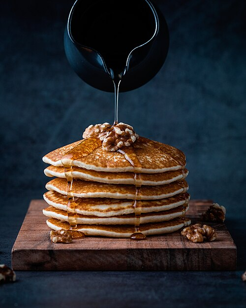
pancakes
Foodiesfeed.com pouring-honey-on-pancakes-with-walnuts

Photo: Mae Mu.
CC0. Wikimedia thumbnail, scaled for display; no other changes. The photo remains available under its original license.
Savor uses these generic dish photos when a recipe has no usable photo of its own. They illustrate the type of food and may differ from the finished recipe. Photos are sourced from Wikimedia Commons; each photographer and license is listed below. Thumbnails are scaled for display without other edits. The photos keep their original licenses.

Foodiesfeed.com pouring-honey-on-pancakes-with-walnuts
Photo: Mae Mu.
CC0. Wikimedia thumbnail, scaled for display; no other changes. The photo remains available under its original license.
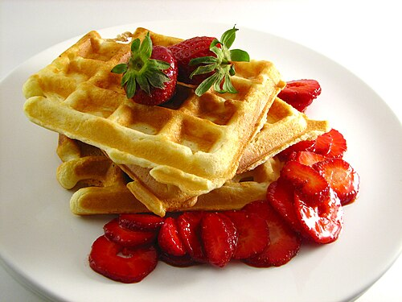
Photo: Parkerman & Christie from San Diego, USA.
CC BY 2.0. Wikimedia thumbnail, scaled for display; no other changes. The photo remains available under its original license.
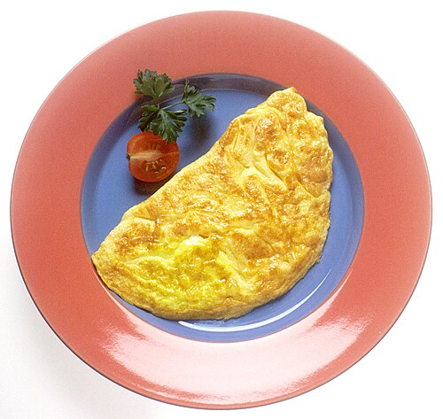
Photo: Renee Comet (photographer).
Public domain. Wikimedia thumbnail, scaled for display; no other changes. The photo remains available under its original license.
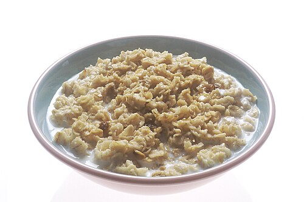
Photo: Renee Comet (Photographer).
Public domain. Wikimedia thumbnail, scaled for display; no other changes. The photo remains available under its original license.
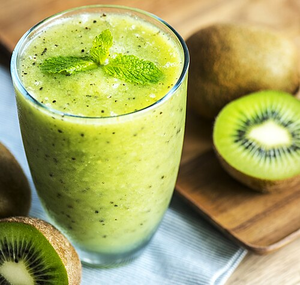
Photo: rawpixel.com.
CC0. Wikimedia thumbnail, scaled for display; no other changes. The photo remains available under its original license.
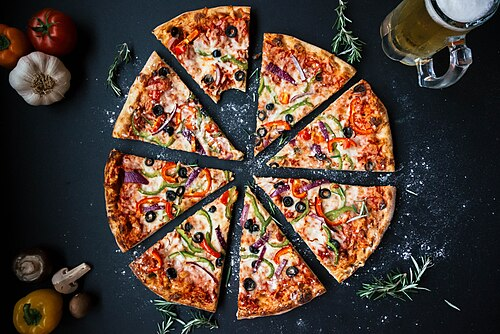
Photo: igorovsyannykov.
CC0. Wikimedia thumbnail, scaled for display; no other changes. The photo remains available under its original license.
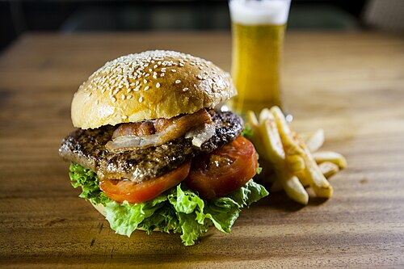
Photo: Hongreddotbrewhouse.
CC BY-SA 3.0. Wikimedia thumbnail, scaled for display; no other changes. The photo remains available under its original license.
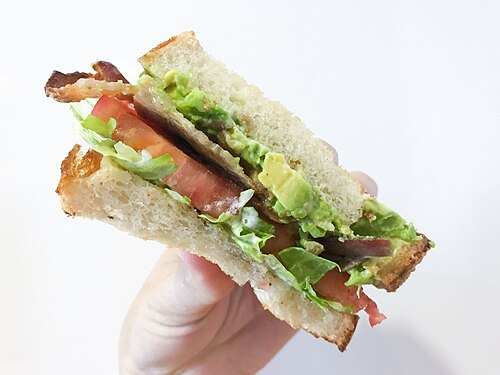
Bacon, lettuce, tomato, and avocado
Photo: Jami430.
CC BY-SA 4.0. Wikimedia thumbnail, scaled for display; no other changes. The photo remains available under its original license.
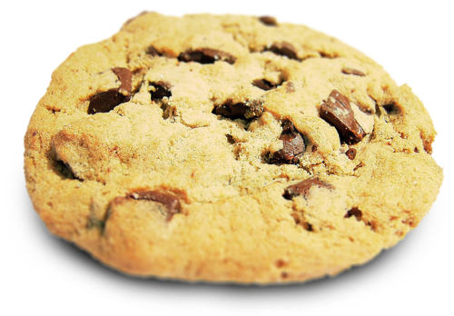
Photo: brainloc on sxc.hu (Bob Smith).
CC BY 2.5. Wikimedia thumbnail, scaled for display; no other changes. The photo remains available under its original license.
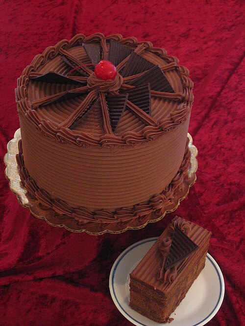
Photo: Tracy Hunter from Kabul,, Afghanistan.
CC BY 2.0. Wikimedia thumbnail, scaled for display; no other changes. The photo remains available under its original license.
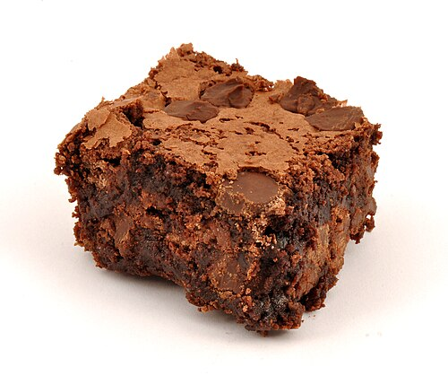
Photo: Ɱ.
CC BY-SA 3.0. Wikimedia thumbnail, scaled for display; no other changes. The photo remains available under its original license.
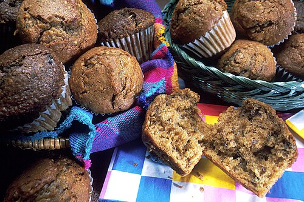
Photo: Unknown photographer/artist.
Public domain. Wikimedia thumbnail, scaled for display; no other changes. The photo remains available under its original license.
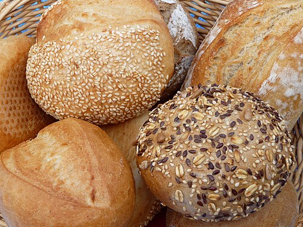
Photo: 3268zauber.
CC BY-SA 3.0. Wikimedia thumbnail, scaled for display; no other changes. The photo remains available under its original license.
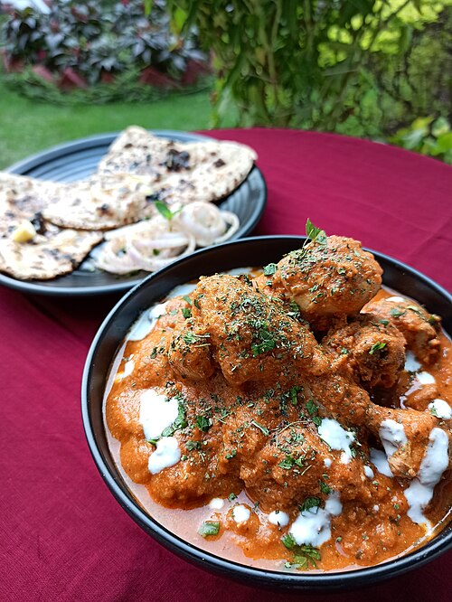
Butter Chicken & Butter Naan - Home - Chandigarh - India - 0006
Photo: Yuvraj Singh 97.
CC BY-SA 4.0. Wikimedia thumbnail, scaled for display; no other changes. The photo remains available under its original license.
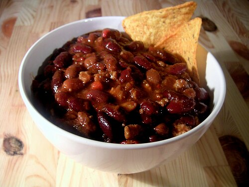
Photo: Carstor.
CC BY-SA 2.5. Wikimedia thumbnail, scaled for display; no other changes. The photo remains available under its original license.
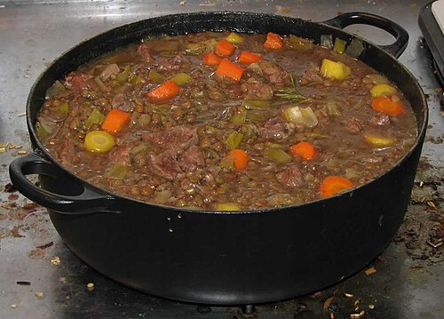
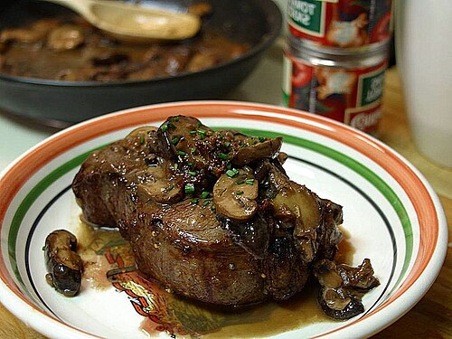
Photo: Jon Sullivan.
Public domain. Wikimedia thumbnail, scaled for display; no other changes. The photo remains available under its original license.
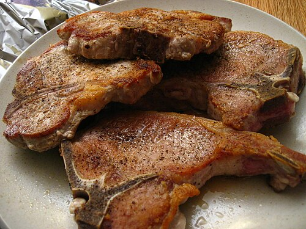
Photo: penny from Oakland, California, USA.
CC BY 2.0. Wikimedia thumbnail, scaled for display; no other changes. The photo remains available under its original license.
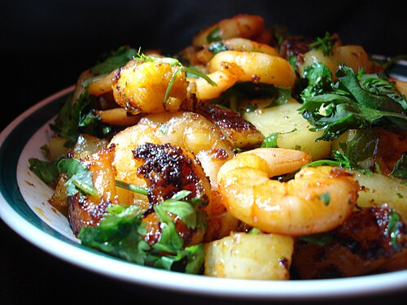
Photo: rovingI.
CC BY 2.0. Wikimedia thumbnail, scaled for display; no other changes. The photo remains available under its original license.
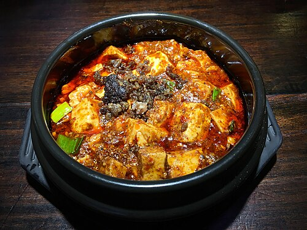
Photo: ZhengZhou.
CC BY-SA 4.0. Wikimedia thumbnail, scaled for display; no other changes. The photo remains available under its original license.
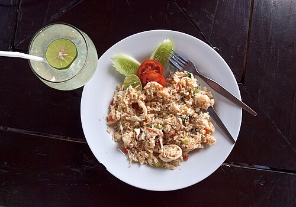
Koh Mak, Thailand, Fried rice with seafood, Thai fried rice
Photo: Vyacheslav Argenberg.
CC BY 4.0. Wikimedia thumbnail, scaled for display; no other changes. The photo remains available under its original license.
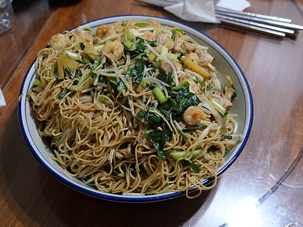
Homemade Chow mein with shrimps and meat with a choy and Choung
Photo: Peachyeung316.
CC BY-SA 4.0. Wikimedia thumbnail, scaled for display; no other changes. The photo remains available under its original license.
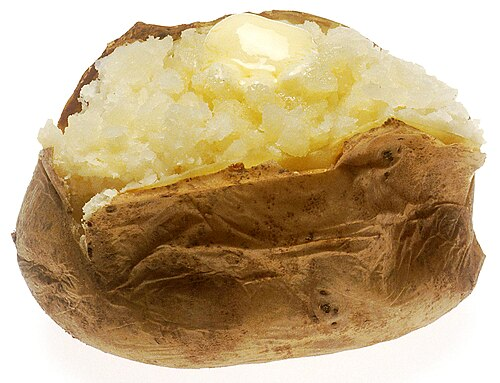
Photo: Renee Comet (photographer).
Public domain. Wikimedia thumbnail, scaled for display; no other changes. The photo remains available under its original license.
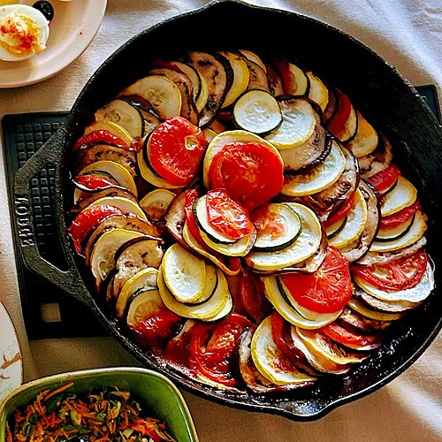
Photo: Jack145945.
CC0. Wikimedia thumbnail, scaled for display; no other changes. The photo remains available under its original license.
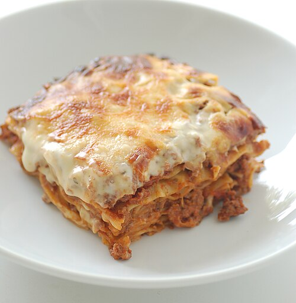
Photo: jules / stonesoup.
CC BY 2.0. Wikimedia thumbnail, scaled for display; no other changes. The photo remains available under its original license.
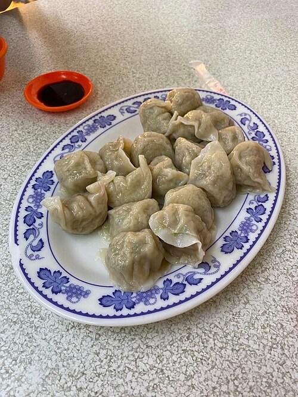
台灣南投草屯水餃Nantou, Taiwan Caotun dumplings
Photo: Yeepunchmen.
CC BY-SA 4.0. Wikimedia thumbnail, scaled for display; no other changes. The photo remains available under its original license.
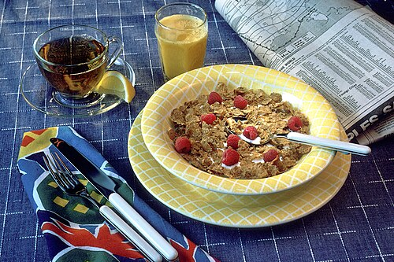
NCI Visuals Food Meal Breakfast
Photo: Unknown photographer/artist.
Public domain. Wikimedia thumbnail, scaled for display; no other changes. The photo remains available under its original license.
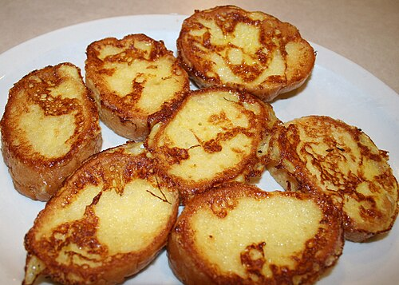
Photo: Jonathunder.
CC BY-SA 3.0. Wikimedia thumbnail, scaled for display; no other changes. The photo remains available under its original license.
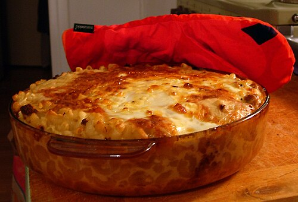
Photo: Suvi Korhonen.
CC BY 2.5. Wikimedia thumbnail, scaled for display; no other changes. The photo remains available under its original license.
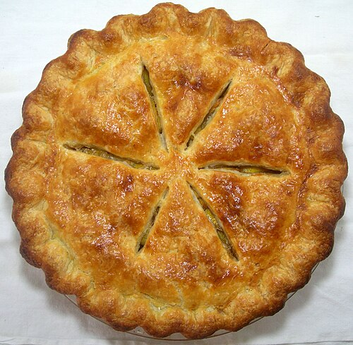
Top down view of peach pie (722379748)
Photo: Heather from Maine, USA.
CC BY 2.0. Wikimedia thumbnail, scaled for display; no other changes. The photo remains available under its original license.
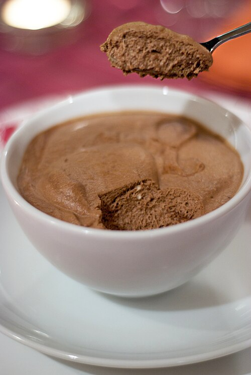
Photo: Lu from Seattle, USA.
CC BY 2.0. Wikimedia thumbnail, scaled for display; no other changes. The photo remains available under its original license.
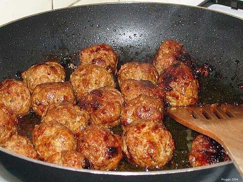
Photo: Fruggo at Dutch Wikipedia.
CC BY 1.0 nl. Wikimedia thumbnail, scaled for display; no other changes. The photo remains available under its original license.
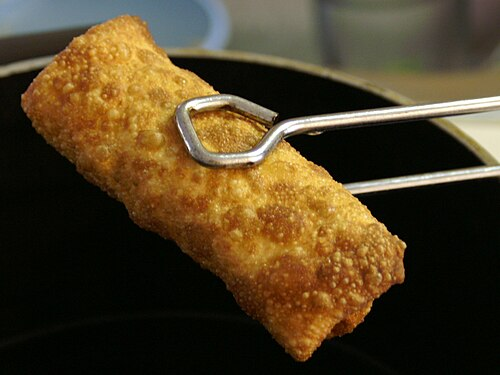
Photo: Unknown photographer.
Public domain. Wikimedia thumbnail, scaled for display; no other changes. The photo remains available under its original license.
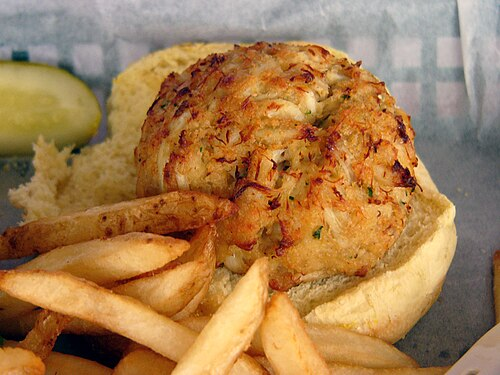
A Delicious Crabcake at the Middleton Tavern
Photo: Kathleen Conklin.
CC BY 2.0. Wikimedia thumbnail, scaled for display; no other changes. The photo remains available under its original license.
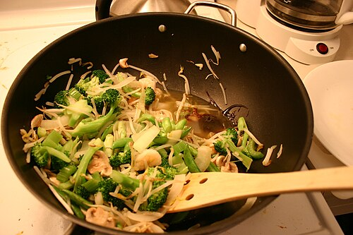
Photo: Mack Male from Edmonton, AB, Canada.
CC BY-SA 2.0. Wikimedia thumbnail, scaled for display; no other changes. The photo remains available under its original license.


.jpg){kind=link}


.jpg){kind=link}


.jpg){kind=link}